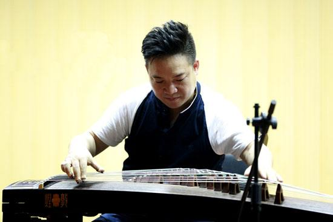
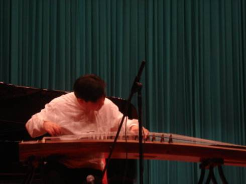
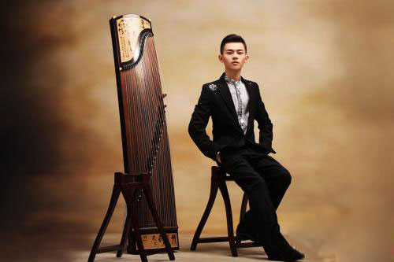

- 学习心得
- 未来畅想
我学习古筝的心得和畅想
这两天小艾茶舍古筝老师史老师基本是早8：:30--晚8:30在茶舍，弹和授专业古筝的入门和演奏，期待大家早日进入高级演奏。老师在一旁指点，我们安排三个学员、三把古筝共同练习。
在史老师专业教古筝的时候，突然意识到，2012年还应该是个学习年，学习专业弹琴，学习驾驶，学习经营经营。明年是一定要拉开部分帷幕，做相对满意的社会成绩！
专业学习古筝第二节课内容：
1、手势固定，手握拳头，手指放松，手指骨节是立起来的，保持这个手势持续地练习食指和中指，然后是拇指，直到练习成习惯弹琴的手势。
2、弹琴，是手往琴弦上走，不是手指往下去抠。有拨弦、刮弦等。
颤音的时候，手臂也是跟着弦走的。
3、记住：大拇指的小关节，随时随地弯着，手指的骨节是立着的，手形有个最高点，四指要放松。
记住：每弹一个弦，拨第二个弦的时候，慢一点，看自己的手形是否正确，再弹第二个弦。
学习专业弹琴，要练习的是心、脑、口、手的一致，这让人锻炼了驾驭自己的大脑能力，让人理解、清晰看待生活和生意。一个时间段、一个时期只能做好一件事。
哲人说：性格决定命运。当你播下一种性格，你也就在收获着一种命运！在传统中国，女人就意味着是天生的弱者。然后，纵观古今中外，成大事的女人却数不胜数。法国哲学家、作家西蒙·波娃在《第二性》一书中说：“大多数女人屈服于命运的安排，不试图采取任何行动，甚至一想到自己是女人就不敢坚定前行了。”
“其实女人走向成功并不难，之要自己敢于打破传统，调整自己的心态并对自己的性格做出准确的定位和把握，成就大事就不再是童话和梦想。”
那么，一个女人到底要有怎么样的性格才能成功，才能成大事？一个重要的原因就是：他们能够驾驭自己的命运！
换一句话说，他们有能够战胜命运的性格！
古筝名家大全—排名不分先后
导读: 随着人们越来越注重艺术文化的发展，越来越多的人去学习乐器，而古筝已经成为非常普遍的一种乐器，越来越多的人开始学习古筝，我们都知道，学习一件乐器并不难，难的是把一件乐器学好，学精。在古筝界有很多的名人，我们一起来看看有哪些老师吧。

王中山 男 中国音乐家协会古筝学会秘书长何宝泉 男 上海音乐学院教授，东方筝会会长
李萌 女 中央音乐学院教授
赵曼琴 男 古筝教育家、原河南省中州古筝学会会长
曹东扶 男 河南筝派杰出代表和奠基人
王巽之 男 著名古筝演奏家、浙江筝派代表人物
罗九香 男 著名客家筝大师
娄树华 男 著名古筝演奏家、一代古筝宗师
高自成 男 著名古筝教育家、演奏家、山东派代表人物
曹正 男 著名古筝教育家、理论家、演奏家、一代古筝宗

张汉斋 男 潮州音乐大师，潮州音乐大师，中国音乐家协会会员赵玉斋 男 著名古筝教育家、演奏家、原沈阳音乐学院教授，东北古筝学会会长
苏文贤 男 潮乐名家
梁在平 男 著名古筝家
林毛根 男 著名古筝艺术家，潮州筝派代表人之一
郭鹰 男 著名古筝教育家、潮州派代表人物
李婉芬 女 著名古筝教育家、演奏家、中国音乐学院教授
周延甲 男 原西安音乐学院教授，陕西秦筝学会会长
赵登山 男 著名演奏家、作曲家、教育家，中国音乐家协会会员，中国音协古筝学会副会长
曹桂芬 女 著名古筝演奏家，系中国音乐家协会会员
项斯华 女 当代中国筝乐大师
邱大成 男 中国音乐学院器乐系副主任、副教授，也是中国音乐家协会会员
任清志 男 古筝大师河南筝派的代表人之一
黎邦荣 男 古筝大师现在所知最早的荷泽地区山东筝的传人
高哲睿 男 古筝大师潮州筝名家
范上娥 女 中央音乐学院课座副教授,国家一级演奏员
魏军 男 古筝演奏家、教育家、陕西秦筝学会创建人之一
韩庭贵 男 古筝艺术家，山东筝派代表人之一
史兆元 男 客家筝派传人，中国音乐学院讲师
饶宁新 男 星海音乐学院副教授，客家筝派代表人之一
娜仁格日勒 女 内蒙古艺术学院教授，蒙古筝"雅托嘎"传人之一
扎木苏 男 内蒙筝代表著名雅托噶（蒙古筝）艺人，内蒙筝代表人物之一
周望 女 中央音乐学院副教授
杨娜妮 女 沈阳音乐学院教授
阎俐 女 沈阳音乐学院教授
曲云 女 陕西师范大学教授
王小月 女 天津音乐学院副教授
阎爱华 女 南京艺术学院副教授、中国音协会员、古筝学会理事
李贤德 女 上海筝会副会长
潘妙兴 男 上海筝会会长
庄辰 男 大连古筝学会会长

林玲 女 中国音乐学院副教授郭雪君 女 上海音乐学院副教授
孙文妍 女 上海音乐学院副教授
赵毅 男 武汉音乐学院副教授
王蔚 女 上海音乐学院副教授
王昌元 女 旅美华裔浙派筝传人
陈安华 男 广东星海音乐学院教授
吴青 女 武汉音乐学院副教授
刘巧君 女 河北艺术学校教授
许菱子 女 中国音乐家协会会员、北京古筝研究会会员、中国民族管弦乐协会会员
袁莎 女 现任教于中央音乐学院
罗小慈 女 上海音乐家协会会员，上海音乐家协会古筝专业委员会常务理事
李炜 男 著名中国古筝演奏家、作曲家
傅明鉴 男 古筝演奏,筝乐作曲,筝学研究,筝艺教育家
李汴 女 中国煤矿文工团筝独奏演员，古筝演奏家，中国音乐家协会会员
杨秀明 男 中国著名的古筝演奏家
童宜风 男 中国音乐家协会、中国曲艺家协会、北京古筝研究会等会员
温福泽 男 著名古筝名家、教育家、重庆筝协会员
Copyright © 2018. 信息工程学院2016级计算机科学与技术